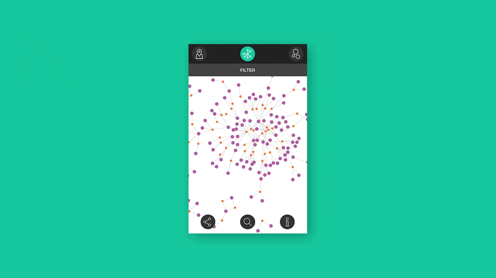
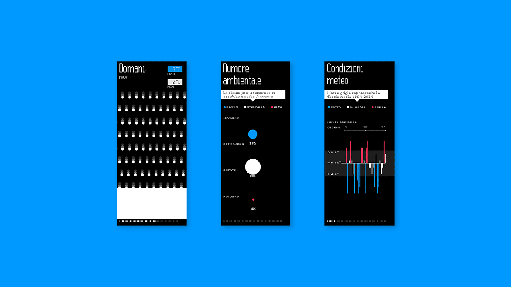
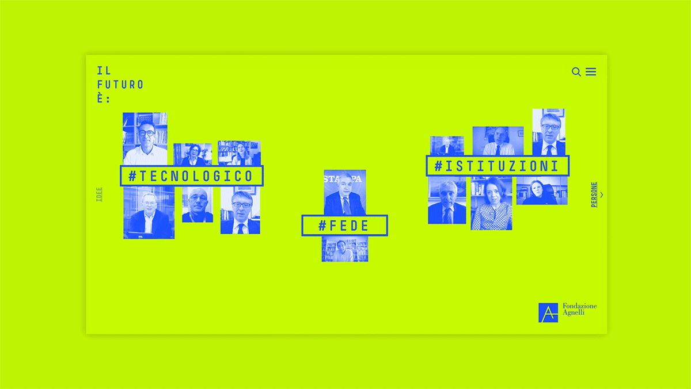
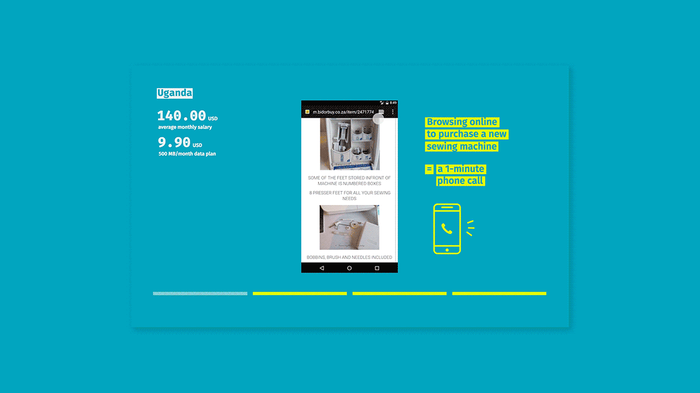
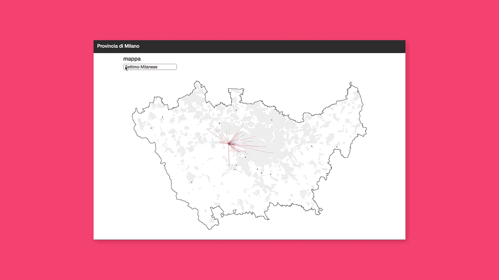
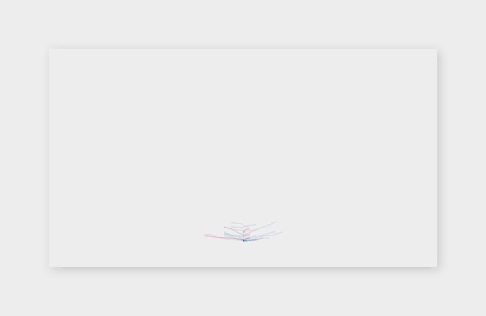

Creating digital products for creative peoples.
I weave together strong design aesthetics with technical know-how

Social innovation explorer
Data visualization, Web, UX, UI, Tool
Interactive data visualization tool

Audi digital points
Data visualization, Exhibition, UI
6 outdoor installations featuring real time data visualization

Il futuro è
Web, UX, UI
Communication format with video interviews and custom website

Mozfest 2016
Exhibition, UX, UI
Five accessible, playful and slightly surreal experiences

Atlas of the outskirts
Data visualization, Maps, Tool
Data visualizations and tools to support urban studies

Visual literature
Data visualization, Tool
Visualizing the writing style of an author